India¶
Instalación¶
Instale los siguientes módulos para obtener todas las funciones de la localización de la India:
Nombre |
Nombre técnico |
Descripción |
|---|---|---|
India - Contabilidad |
|
Paquete de localización fiscal predeterminado |
India - Facturación electrónica |
|
|
India - Guía de embarque electrónica |
|
|
India - Declaración electrónica de impuestos GSTR para la India |
|
|
India - Reportes contables |
|
|
India - Reporte de compra (GST) |
|
India - Reporte de compra GST |
India - Reporte de ventas (GST) |
|
India - Reporte de ventas GST |
India - Reporte de existencias (GST) |
|
India - Reporte de existencias GST |

Sistema de facturación electrónica¶
Odoo cumple con los requisitos del sistema de facturación electrónica del Impuesto sobre Bienes y Servicios (GST) de la India.
Configurar¶
Registro de facturación electrónica NIC¶
Para obtener sus credenciales API debe registrarse en el portal de facturación electrónica NIC. Necesita estas credenciales para configurar su aplicación Contabilidad de Odoo.
Inicie sesión en el portal de facturación electrónica NIC , haga clic en Iniciar sesión (Login) y escriba su usuario y contraseña;
Nota
Si ya se registró con anterioridad en el portal NIC, puede usar las mismas credenciales para iniciar sesión.

Desde el tablero, vaya a ;
Después recibirá un código OTP en el número de teléfono celular que tiene registrado. Escriba el código OTP y haga clic en Verificar OTP.
Seleccione Mediante GSP para la interfaz API, seleccione Tera Software Limited como GSP y escriba el usuario y contraseña para su API. Una vez listo, haga clic en Enviar.
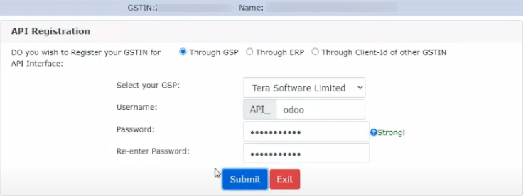
Configuración en Odoo¶
Para habilitar el servicio de facturación electrónica en Odoo, vaya a y escriba el nombre de usuario y contraseña previamente establecidos para la API.
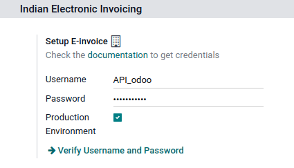Diarios contables¶
Para enviar facturas electrónicas de forma automática al portal de facturación electrónica NIC, primero debe configurar su diario de ventas. Vaya a , abra su diario de ventas y en la pestaña Ajustes avanzados, en intercambio electrónico de datos, habilite Facturación electrónica (IN) y guarde.
Flujo de trabajo¶
Validación de la factura¶
Una vez validada una factura, aparece un mensaje de confirmación en la parte superior. Odoo carga de forma automática el archivo JSON firmado con las facturas validadas al portal de facturación electrónica NIC después de un tiempo. Si desea procesar la factura de inmediato, haga clic en Procesar ahora.

Nota
Puede encontrar el archivo JSON firmado en los archivos adjuntos en el chatter.
Puede consultar el estado del EDI del documento en la pestaña Documento EDI o en el campo Facturación electrónica de la factura.
Reporte la de factura en PDF¶
En cuanto valida y envía una factura, puede imprimir su reporte en PDF. El reporte incluye el IRN, Ack. No (número de confirmación), Ack. Date (fecha de confirmación) y código QR. Estos certifican que la factura es un documento fiscal válido.

Cancelar una factura electrónica¶
Si desea cancelar una factura electrónica, vaya a la pestaña Otra información de la factura y complete los campos Motivo de la cancelación y Comentarios de la cancelación. Después, haga clic en Solicitar cancelación de EDI. El estado del campo Factura electrónica cambia a Por cancelar.
Importante
Al hacer esto cancela la factura electrónica y la guía de embarque electrónica.

Nota
Si desea suspender la cancelación antes de procesar la factura, haga clic en Suspender la cancelación del EDI.
Una vez que solicite cancelar la factura electrónica, Odoo envía de forma automática el archivo JSON firmado al portal de facturación electrónica NIC. Puede hacer clic en Procesar ahora si desea procesar la factura al instante.
Verificación de facturación electrónica GST¶
Después de enviar una factura electrónica, puede verificar si la factura está firmada desde el propio sitio web del sistema de facturación electrónica GST.
Descargue el archivo JSON de los archivos adjuntos, este se encuentra en el chatter de la factura relacionada;
Abra el portal de facturación electrónica NIC y vaya a ;
Seleccione el archivo JSON y envíelo;

Aparecerá un mensaje de confirmación si el archivo está firmado.

Guía de embarque electrónica¶
Configurar¶
Odoo cumple con los requisitos del sistema de guía de embarque electrónica del Impuesto sobre bienes y servicios (GST) de la India.
Registro de la API en la guía de embarque electrónica NIC¶
Debe registrarse en el portal de guía de embarque electrónica NIC para obtener sus credenciales API. Necesita estas credenciales para configurar su aplicación Contabilidad de Odoo.
Inicie sesión en el portal de guía de embarque electrónica NIC , haga clic en Iniciar sesión y escriba su usuario y contraseña.
Desde su tablero, vaya a .
Haga clic en Enviar OTP. Una vez que haya recibido el código en su númerode teléfono celular registrado, introdúzcalo y haga clic en :guilabel:`Verificar OTP;
Verifique si Tera Software Limited ya se encuentra en la lista de GSP/ERP registrados. Si es así, utilice el mismo usuario y contraseña que usa para iniciar sesión en el portal NIC. De lo contrario, siga los siguientes pasos:

Seleccione Agregar/nuevo, elija Tera Software Limited como su nombre GSP, cree un usuario y contraseña para su API y haga clic en Agregar.

Configuración en Odoo¶
Para configurar el servicio de guía de embarque electrónica, vaya a , e ingrese su usuario y contraseña.

Flujo de trabajo¶
Enviar una guía de embarque electrónica¶
Puede enviar una guía de embarque electrónica de forma manual al hacer clic en Enviar guía de embarque electrónica. Para enviar la guía de embarque electrónica en automático al confirmar una factura, habilite Guía de embarque electrónica (IN) en su Diario de ventas o compras.
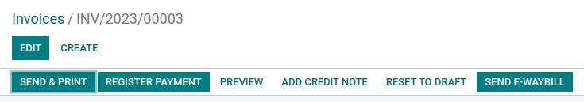Validación de la factura¶
Después de emitir y enviar una factura a través de Enviar guía de embarque electrónica, aparece un mensaje de confirmación.
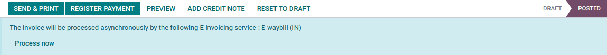Nota
Puede encontrar el archivo JSON firmado en los archivos adjuntos en el chatter.
De forma automática, Odoo sube el archivo JSON firmado al portal gubernamental después de un tiempo. Haga clic en Procesar ahora si desea procesar la factura en ese instante.
Reporte la de factura en PDF¶
Puede imprimir el reporte PDF de la factura una vez que haya enviado la guía de embarque electrónica, este incluye el número de guía de embarque electrónica y la fecha de validez de la guía de embarque electrónica.
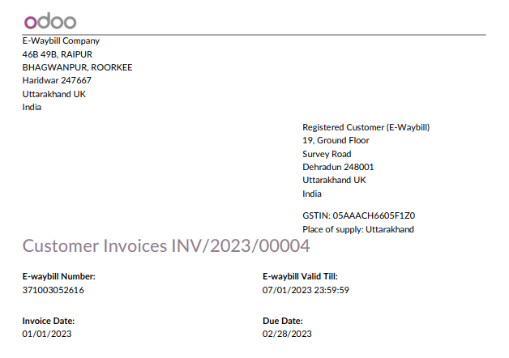Cancelar una guía de embarque electrónica¶
Si desea cancelar una guía de embarque electrónica, vaya a la pestaña Guía de embarque electrónica de la factura relacionada y complete los campos Motivo de la cancelación y Comentarios de la cancelación. Después, haga clic en Solicitar cancelación de EDI.
Importante
Hacer esto cancela la factura electrónica (en caso de que aplique) y la guía de embarque electrónica.
Nota
Si desea suspender la cancelación antes de procesar la factura, haga clic en Suspender cancelación de EDI.
Una vez que haya solicitado la cancelación de la guía de embarque electrónica, Odoo envía de forma automática el archivo JSON firmado al portal gubernamental. Puede hacer clic en Procesar ahora si desea procesar la factura en ese instante.
Declaración de impuestos GST en la India¶
Habilitar acceso a la API¶
Antes de presentar declaraciones de impuestos GST en Odoo, debe habilitar el acceso a la API en el portal GST.
Inicie sesión en el portal GST con su usuario y contraseña, vaya a Mi perfil (My profile) en su menú de perfil.
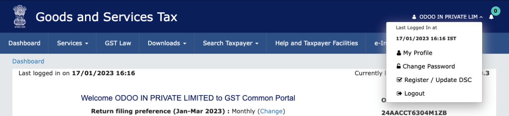Seleccione Administrar el acceso a la API (Manage API Access) y haga clic en Sí (Yes) para habilitar el acceso.

Esta acción habilitará un menú desplegable de duración (Duration). Seleccione la duración de su preferencia y haga clic en confirmar (Confirm).
Servicio GST de la India en Odoo¶
Una vez que haya habilitado el acceso a la API en el portal GST, puede configurar el Servicio GST de la India en Odoo.
Vaya a y escriba su usuario GST. Haga clic en Enviar OTP, introduzca el código y valídelo.

Presentar declaraciones GST¶
Puede presentar su declaración GST cuando el Servicio GST de la India está configurado. Vaya a , cree un nuevo periodo de declaración GST si no hay uno. En Odoo, la declaración de impuestos GST se realiza en tres pasos:
Nota
La periodicidad de la declaración de impuestos se puede configurar según las necesidades del usuario.
Enviar el GSTR-1¶
El usuario puede verificar el reporte GSTR-1 antes de subirlo al portal GST, solo debe hacer clic en Reporte GSTR-1.
Si el reporte GSTR-1 es correcto, haga clic en Cargar a GSTN para enviarlo al portal GST. El estado del reporte GSTR-1 cambia a Enviando.
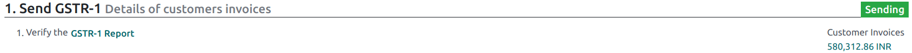Tras unos segundos, el estado del reporte GSTR-1 cambia a En espera del estado, esto significa que el reporte GSTR-1 ha sido enviado al Portal GST y está siendo verificado allí mismo.

Una vez más, después de unos segundos, el estado cambia a Enviado o Error en la factura. El estado Error en la factura indica que algunas de las facturas no están completas de forma correcta, así que el portal GST no las puede validar.
Si el estado del GSTR-1 es Enviado, significa que ahora puede declarar su reporte GSTR-1 en el portal GST.
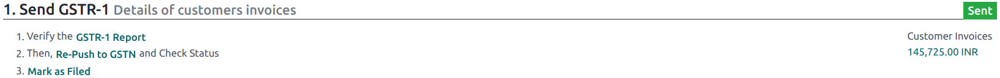Si el estado del GSTR-1 es Error en la factura, se deberán revisar las facturas para detectar errores en el registro de notas. Una vez resueltos los problemas, el usuario puede hacer clic en Cargar a GSTN para volver a enviar el archivo al portal GST.


Haga clic en Marcar como declarado tras presentar el reporte GSTR-1 en el portal GST. El estado del reporte cambia a Declarado en Odoo.

Recibir el GSTR-2B¶
Los usuarios pueden obtener el reporte GSTR-2B desde el portal GST, esto hace que el reporte se concilie de manera automática con sus facturas de Odoo.
Haga clic en Obtener resumen de GSTR-2B. Después de unos segundos, el estado del reporte cambia a En espera de la recepción. Esto significa que Odoo está intentando recibir el reporte GSTR-2B del portal GST.

Una vez más, tras unos segundos, el estado del GSTR-2B cambia a En proceso. Odoo está conciliando el reporte GSTR-2B con sus facturas de Odoo.

Después de esto, el estado del reporte GSTR-2B cambia a Conciliado o Parcialmente conciliado.
Si el estado está Conciliado:
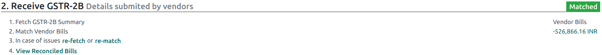Si el estado está Parcialmente conciliado puede hacer cambios en las facturas. Haga clic en Ver facturas conciliadas y después en Volver a conciliar.
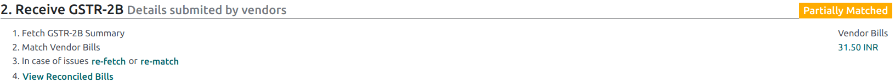 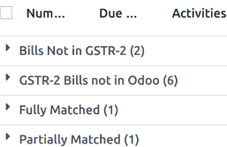
Reporte GSTR-3¶
El reporte GSTR-3 es un resumen mensual de ventas y compras. Esta devolución se genera de forma automática al extraer la información de GSTR-1 y GSTR-2.
Los usuarios pueden comparar el reporte GSTR-3 con el mismo reporte que se encuentra disponible en el portal GST para verificar si coinciden, haga clic en Reporte GSTR-3.
Una vez que el usuario verificó el reporte GSTR-3 y se pagó el importe del impuesto en el portal GST, puede cerrar el reporte si hace clic en Asiento de cierre.

En Asiento de cierre, agregue el monto del impuesto pagado en el portal GST mediante challan y haga clic en REGISTRAR para registrarlo;
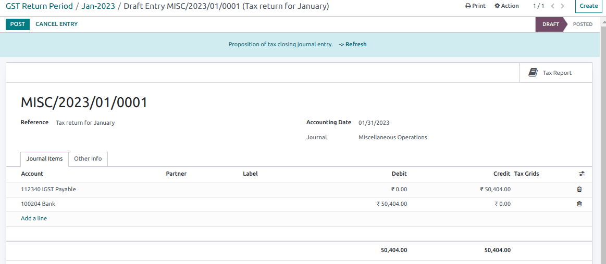Una vez registrado, el estado del reporte GSTR-3 cambia a declarado.

Reportes de impuestos¶
Reporte GSTR-1¶
El reporte GSTR-1 se divide en secciones. Muestra el importe base, CGST, SGST, IGST y CESS para cada sección.
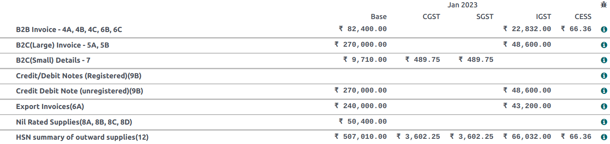
Reporte GSTR-3¶
El reporte GSTR-3 incluye distintas secciones:
Detalles de suministro interno y externo sujetos a un cobro revertido;
ITC elegible;
Valores de suministro interno externo, sin gravar y no sujetos a GST;
Detalles de suministros interestatales a personas no registradas.
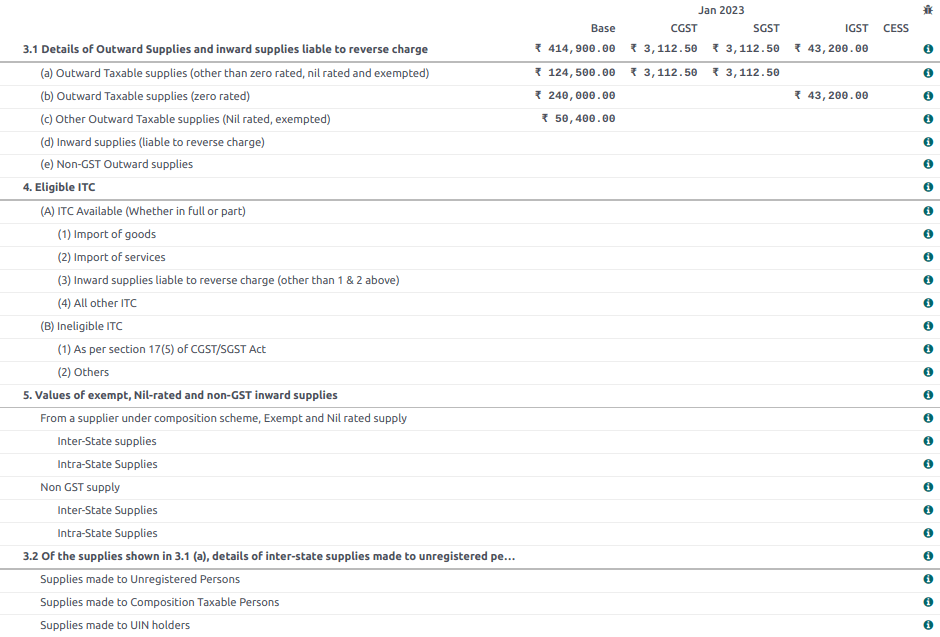